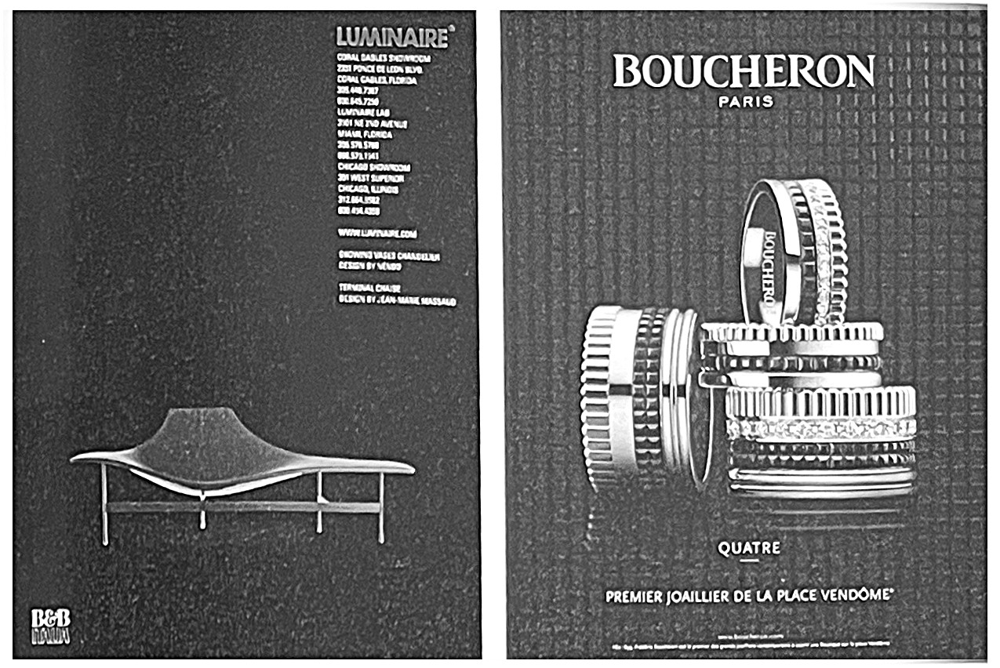
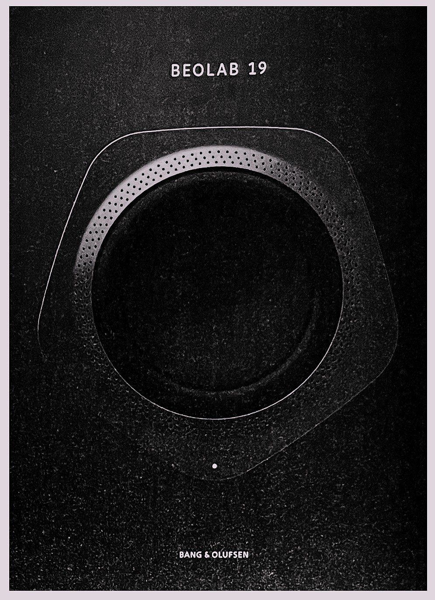
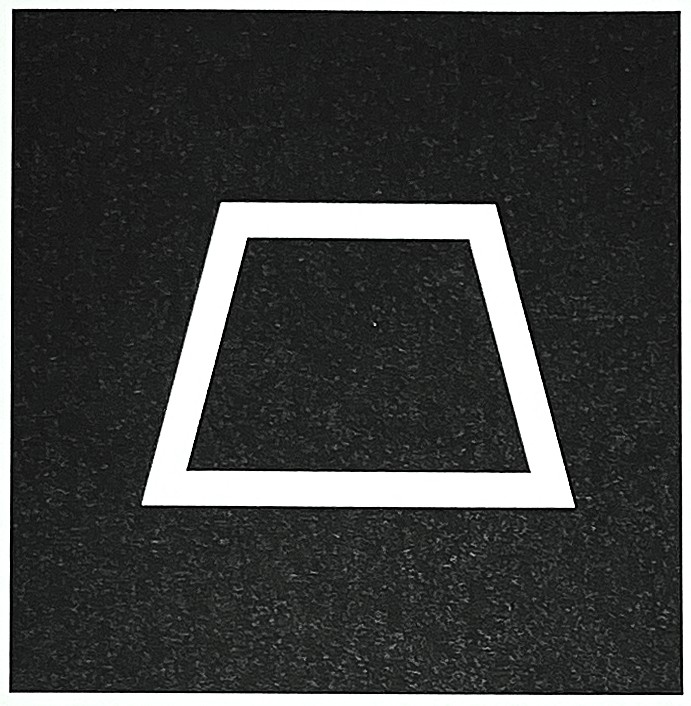
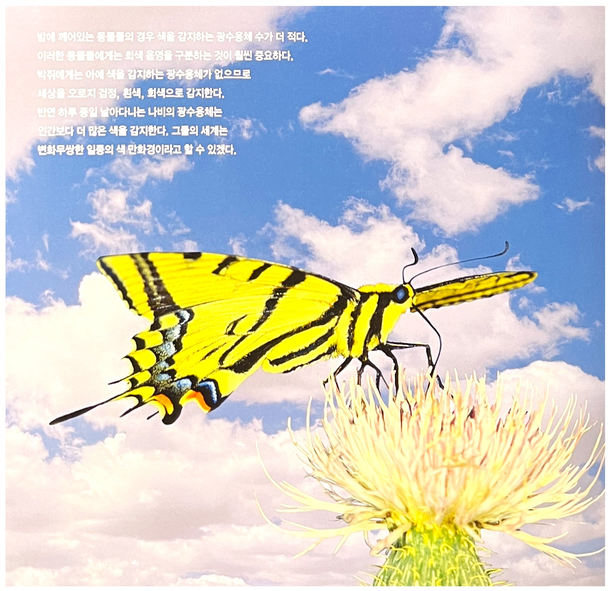
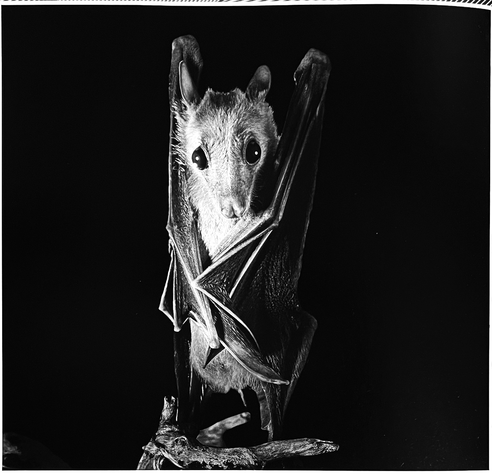
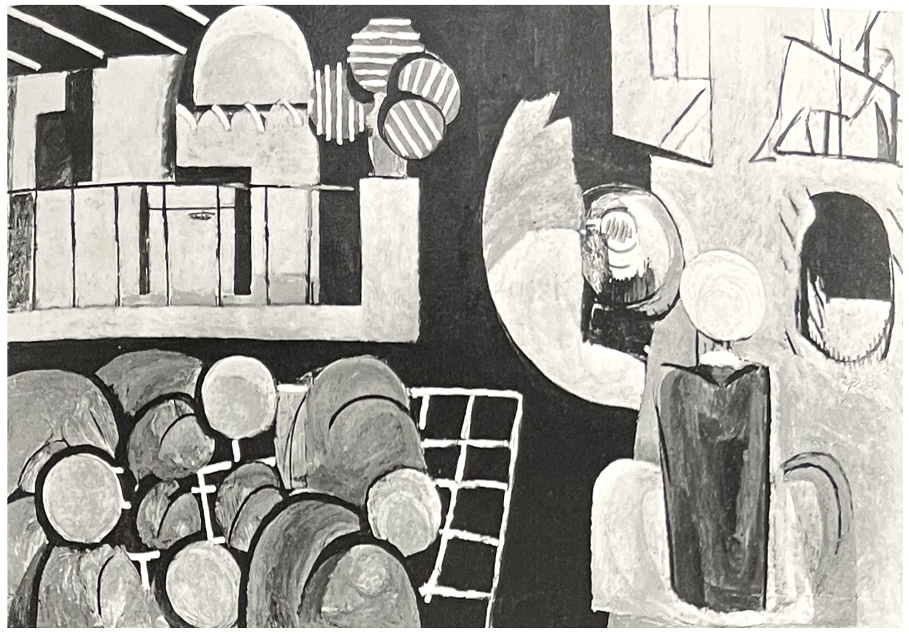
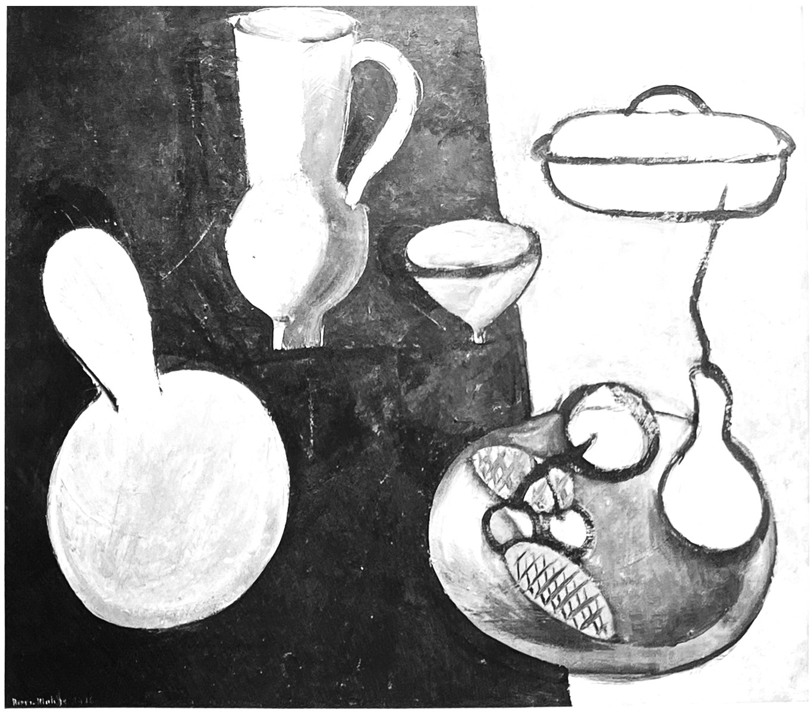
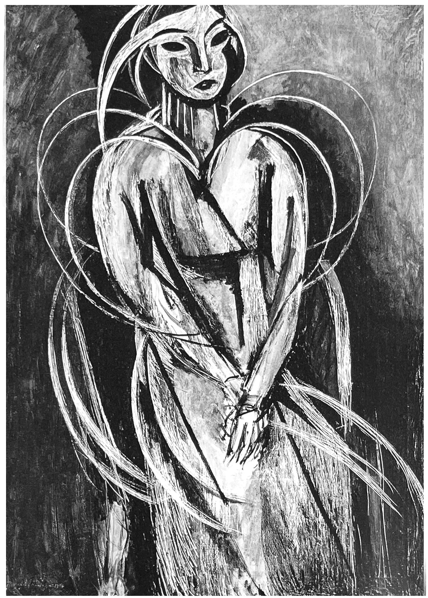
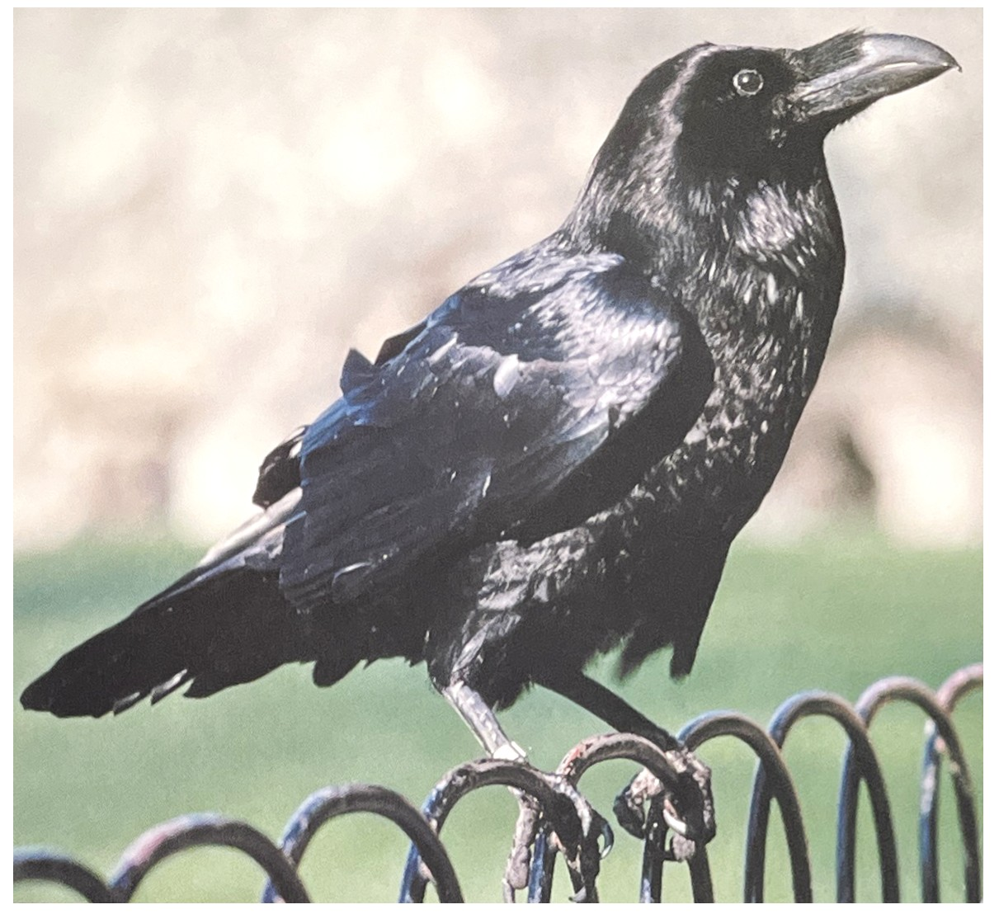

유행에 쉽게 흔들리지 않고 세련되고 현대적인 느낌을 준다. 질리지 않아 다른 색과 비율적으로 잘 적용하면 도시적인 이미지를 줄 수 있지만 검은색을 사용할 때는 너무 단조로위지지 않도록 주의해야 한다. 대비되는 색상을 사용하거나 일관된 검은색을 사용하여 극도의 절제력을 콘셉트로 잡는 것이 좋다.
1. 색의 성격오랜 시간 만들어진 색상이 가지고 있는 성격 :
차분, 소극적, 집중, 융통성 및 자립심 부족, 성실
2. 색의 영향사람이 인지했을 때 느낌 :
감정 억제, 중성적, 우울, 에너지 부족, 지루함, 수동성
3. 색의 처방색상을 의도적으로 활용할 수 있는 방법 :
심리적인 안정, 우월감 억제

* B&B 이탈리아 광고 디자인, 포인트 배색을 아주 조금 사용했고 검은색을 주조색으로 사용해서 절제력을 느낄 수 있다.
** 주얼리 Boucheron 광고 디자인, 검은색을 사용할 때는 대비되는 색상을 주의해서 사용하고 주제가 되는 개체나 요소에 신경을 써야 한다.
검정색의 상징[4]
긍정적 감정과 상징:
우아함, 개성, 단결, 권위, 현대적인
부정적 감정과 상징:
어둠, 결핍, 범죄, 악마, 불행, 비밀, 미스터리, 적막, 은폐,
죽음, 사형, 두려움, 적대, 유령, 종말, 혼돈, 의심
연상되는 자연/자연물:
숯, 석탄
정치.종교적 상징:
무정부 상태, 혁명

검정색의 심볼사다리꼴[6]
검정은 가시광선에서 어떤 부분도 빛을 발하거나 반사하지 않는 사물의 색으로 모든 빛의 파장을 흡수한다. BLACK의 영어단어는 고대 영국에서 검은, 어두움을 의미하는 blaec에서 유래되었다.
검정이 권위의 이미지로 의례, 종교 상징에 사용되어 왔으며 대학 학위 수여식에서 졸업생들의 검정 가운이나, 의례 행사에서 착용하는 검정 턱시도와 타이, 법원의 판검사 가운으로, 클래식 음악가들의 연주회에서 연주복으로 사용되어 왔고, 종교적 의미로는 카톨릭 신주나 수녀, 수도승의 종교복으로, 또한 무슬림 여성들이 착용하는 의상의 색으로 사용되어 왔다.
검정색의 힘[3]검정, 하양, 그리고 회색은 인류 역사가 시작된 이래 극히 중요한 색이었다. 이들은 다른 색보다(특히 빨강보다도 훨씬 더) '표준색'의 개념에 부합하면서 그 어떤 상징 이상의 의미를 지닌다.
그렇다고 오해하지 말기 바란다. 검정, 하양, 회색이 '표준색'이란 뜻은 아니다. 색채 이론다들은 이들을 '다채로운 색'이 아닌 '단순한 색' 혹은 '무색'으로 인식한다. 이들은 단순히 밝음과 어두움을 구별하는 눈의 망막 간상체가 작용한 결과다. 이것이 사물을 인지하는 과정에서 나타나는 명암의 수준일 뿐이다. 이런 이유로 색채 이론가는 물론 민속학에서도 검정, 하양, 회색을 표준색이나 '정식 색상'으로 간주하지 않는다. 그럼에도 이들이 원색에 속한다는 사실은 틀림없다. 그 이유는 가장 원초적인 언어에서조차 검정과 하양의 개념이 나타나기 때문이다. 이들은 빨강의 원색보다 더 오래된 색일지 모른다. 하양과 검정은 예로부터 빛과 어두움, 선과 악이라는 반대 개념을 구현하고 있다.
검정과 하양의 가치는 같다.
또한 그 가치는 분명하다. 검정은 부정적인 심상을 표현하고 하양은 긍정적인 이미지를 그린다. 우리가 검저에 몰두하면 할수록 끊임없이 반대색, 즉 하양도 함께 연상된다. 서로 대비되면서도 가장 밀접한 색인 게 그 이유다.
태초에는 어두움, 빛의 무게, 절대적인 무(無)와 같은 혼돈이 세상을 지배했다. 이런 상황을 극복하게 란 것은 오직 자연의 힘이었다. 자연에서 빛이 태어나고 이로 인해 생명이 나타나는 등 여러 사건이 일어났다. 인간은 자연이 선사하는 거대한 순환과정에 놓여 있다. 선과 악, 빛과 어두움, 삶과 죽음이 끊임없이 투쟁하고 교차하며 그 순환을 계속한다. 자연의 섭리 아래 그 중 하나는 반쪽에 불과하다. 반대 개념이 함께 할 대야 각자 완전해진다. 즉 둘은 함께 전체에 포함되어 작용하는 것이다.
이러한 전체성은 거의 모든 종교에서 발견된다. 또 다른 공통사항은 음과 양이 결합해 움직인다는 세계관이다. 종교는 외형면에서 다양하지만 대부분 인간을 우주 중심에 두고 이원론으로 세계를 나눈다. 사람에게 있어 이는 생활에서 느끼는 섭리다. 낮과 밤, 빛과 그림자, 좋은 것과 나쁜 것 등 우리가 습관적으로 당연하게 받아들이는 사항이다.
양극으로 보이는 사항들은 사실 상대적이다. 어느 한쪽이 절대적일 수 없다. 다시말해 절대적인 검정도, 절대적인 하양도 존재하지 않는다. 그렇지만 모든 빛을 합치면 하양이 되고, 모든 물감을 섞으면 검정이 나타난다. 특별한 형체도 없고 순수한 검정, 완전한 하양이라고 말할 수 있는 실체가 없다. 사람에 따라서는 검정을 이해하기 위해 '마이너스 빛'이라는 개념을 이용한다. 이미 언급 했듯이 검정은 빛과 거리가 멀다. 스스로 빛을 발하지도 않는다.
밤에 깨어 있는 동물들의 경우 색을 감지하는 광수용체 수가 더 적다. 이러한 동물들에게는 회색 음영을 구분하는 것이 훨씬 중요하다. 박쥐에게는 아예 색을 감지하는 광수용체가 없으므로 세상을 오로지 검정, 흰색, 회색으로 감지한다. 반면 하루 종일 날아 다니는 나비의 광수용체는 인간보다 더 많은 색을 감지한다. 그들의 셰계는 변화무쌍한 일종의 색 만화경이라고 할 수 있겠다.[1]
 검정색의 역사[3]인도 신화에서도 비슷한 이원론적인 세계관이 발견된다. 찬란한 빛은 우선 시바Shiva란 신으로 그려진다. 시바는 힌두교 시바파에서 최고의 신이자 우주 최고 진리로 숭배되었다. 암흑과 음침한 면을 대표하는 존재는 '검은 칼리Kali다. 칼리는 시바의 아내로서 스스로를 파멸하는 악마의 신이라 해 두려움을 샀다.
집시들은 성모 마리아와 더불어 땅의 수호 성자로서 '검은 사라'를 섬긴다. 매년 프랑스 프로방스 지역에 있는 생 마리 드 라메르Les Saintes Maries de la Mer에서 그를 추앙하는 의식을 올린다. 이와 비슷한 '검은 마도나'와 같은 성녀 숭배 의식은 도처에서 발견된다.
서양에서 체스에서나 동양의 바둑에서 흰색과 검은색은 서로 밀고 밀리는 싸움을 한다. 두 가지 상반된 색상이 활용되는 모습은 널뛰기 등 다른 놀이에서도 발견할 수 있다. 구석기 시대이래 잘 알려진 널뛰기는 휴식을 취하는 목동의 놀이로 유명하다. 오래 젼부터 목동은 양쪽에서 각각 검정 옷과 하얀 옷을 입고 널뛰기를 즐겨 왔다.
선과 악의 대립은 인류가 나타난 태초부터 계속되었다. 최후의 심판을 묘사한 성서의 요한계시록에도 등장한다. 소설가 톨킨Tolkien도 선악을 주 모티브로 '반지의 제왕'을 내놓았다.
히틀러 시절 검정제복을 입은 SS사단이 목숨을 걸고 적을 전멸시킨 원정은 '검은 사건'중에서도 최고다. '검은 군주', 프레드리히 빌헤름 2세 소유의 의용단은 '검은 군대'로 불렸다. 이들은 나폴레옹과의 베르사유 조약 이후에도 협정에 반대하는 전쟁을 계속했다. 무솔린 치하의 이탈리아 파시스트의 준 군대식 동맹은 검정 셔츠를 입어 검정 이미지를 부각시켰다.
지중해 지역에서 일정 나이 이상의 과부는 검정색 옷을 입는다. 이때 검정 옷은 과부만을 상징하는 게 아니라 성숙함과 귀함을 드러낸다. 즉, 귀부인임을 나타내는 것이다.
오늘날 일상생활에서 검정은 어떻게 해석될까? 오토바이족과 펑크록 가수들은 검정색 가죽옷을 즐겨 입는다. 이 검정 옷은 폭력과 파괴의 속성을 지닌다. 차가운 금속, 해골, 면도날, 쇠사슬 등의 성격과 비슷하다. 오토방족이나 펑크록 가수들의 복장에서 나타나는 검정의 이미지는 반항이다.
세계 대공항의 시작이라 할 수 있는 1929년 10월 29일에 있었던 월스트리트 주식시장 붕괴는 검은 화요일Black Thusday이라는 별명이 붙여졌다.[4]
마티스의 검은 빛[7]마티스는 19세기 일본의 소묘가, 화가, 판화제작자인 호쿠사이의 색에 대한 논문에 대해 언급하면서 전범위의 검은색의 목록을 작성하였다.
오래된 검은색과 상쾌한 검은색이 있다. 윤기가 흐르는 검은색과 광택이 없는 검은색,
태양빛의 검은색과 그림자의 검은색, 오래된 검은색을 표현하기 위해서는 파랑과
혼합해야 하고, 무광택의 검은색을 위해서는 흰색과 혼합해야 한다. 빛나는 검은색을
위해서는 고무가 추가되어야 한다. 태양빛의 검은색은 회색빛이 반사되어야 한다.
여기서 매우 반사적인 매개체를 추가함으로써 검은색은 윤기가 나고 반짝거릴 수 있게 되었다.

1866년 에두아르 마네의[자카뤽 아스트뤽의 초상화], 마티스는 특별히 빛나는 검은색에 대해 그림을 칭찬하였다.
색으로서 검정에 대한 그의 메모에서 마티스는 마네의 두 작품을 언급한다. 1868년 '화실에서의 아침식사' Breakfast in the Sudio에서는 중앙의 어린 소년의 벨벳 자켓이 '솔직하고 빛나는 검은색'이라고 하였으며, 1866년 '자카리 아스트뤽의 초상화'Portrait of Zacbarie Astruc에서는 아스트뤽이 입고 있는 검은색 벨벳 양복이 비슷하게 반짝거린다고 하였다. 검은색 정장을 입고 검은색 실크 넥타이를 맨 검은 머리의 아스트뤽은 단조로운 검은색을 배경으로 하고 있다. 검은색 바탕에 검은색을 칠하는 것은 특별한 지각적 기술을 요한다.
1915-16년 마티스의 '모로코 사람들'에서 기도하는 사람들은 단조로운 검은색을 배경으로 한다.
1940년대 마티스는 1차 대전 기간 중 그의 '검은색' 시기의 개요를 재구성했다. 1-2년 후 작은 그림인 '박'Gourds은 흰색 선의 이미지는 날카롭게 후퇴하는 공간 내에서 3차원적으로 제시되었다. 그림 안에서 모든 대상은 검은색과 회청색의 영역으로 분명하게 나뉘어진 2차원의 배경하에 평평하게 보인다.
현대의 비평가들은 뉴욕 현대미술관에 있는 피카소의 1915년 '어릿광대'Harlequin에서의 검은색 또한 지적한다. 마티스는 그 다음 해 초반 드랭Andre Derain에게 보내는 편지에서 이 그림에 주목했지만 색에 대해서는 언급하지 않았다. 그렇다면 무엇이 마티스로 하여금 '박'에서 그렇게 극적인 방법으로 빛으로서의 검은색에 대한 생각에 반응하게 하였을까?
1915-16년 '박'에서 마티스는 대상들을 과학적 시료들처럼 검은색과 회청색의 배경에 납작하게 배치하였다. 그는 '어두움의 색으로서가 아니라 빛의 색으로서의 순수한 검은색을 사용하기 시작한 것'은 이 작품에서였다고 기술했다.
단순히 어두운 것이 아니라 색으로서 검은색에 대한 개념은 르네상스 이후로 화가들에게는 논란의 대상이었고, 19세기 후반이 되어서야 어느 정도 일반적으로 받아들여지게 되었다. 마티스와 동시대 사람들 중에서 말레비치Malevich와 같이 이론으로서 많이 읽혀지는 화가는 프라운호퍼의 흡수선Fraun-hofer absorption(복사된 빛이 대기 중의 원소에 의해서 흡수되는 특정 파장의 기준선)을 빛의 모든 합이 흰색일 뿐만 아니라 스펙트럼 자체에 검은색이 존재한다는 증거로 해석하기까지 하였다.
그러나 빛으로서 검은색의 개념은 매우 새롭고, 역설적이며 급진적이어서 더 많은 상황과 정밀한 연구를 필요로 한다. 최근의 지각 연구자들의 분석은 이러한 개념이 정립된 것이 1913년 가을, 환한 곳에서 어두운 스튜디오로 마티스가 이사한 것과 연관 지을 수 있다고 본다. 여기서 그는 어두운 부분과 맞붙어 있을 때 더 밝게 보이는 동시 대비 및 명도 대비의 법칙에 관심을 가진다. 그러한 효과는 비록 쇠라가 절대적으로 단조롭고 짙은 색조를 사용하지 않았기 때문에 단순히 창작하는 것이 아니라 표현해야 하고자 했다고 하더라도, 쇠라의 그림에서는 매우 풍부하게 관찰된다.
확실히 마티스는 '검은색과 그들의 대비'를 '모로코 사람들'에서 처음으로 활용하게 되었다고 회상하고 있으며, 꽤 큰 마티스의 작품들을 긴 시간 관찰해 보면, 강력하고 빛을 발하는 검은색의 잔상이 유발될 것이다.마티스의 '이본 랑스베르 양의 초상화'Portrait of Mlle yvonne Landberg, 1914의 그림에서 그는 오랫동안 모델을 세워두고 다시 칠하기를 반복한 후에 결국은 젊은 몸 주위에 힘 있는 아치 모양의 선들을 긁어냈다. 이들의 내뿜는 효과는 좀처럼 생생하지 않았다. 그러나 현재적 맥락에서 가장 놀라운 것은 그 이전 해에 마티스가 그의 부인을 그린 초상화에서와 마찬가지로 여기서도 영혼의 창인 큰 눈은 완전히 깜깜하게 그려졌다는 것이다.
1914년 마티스의 '이본 랑스베르 양의 초상화'
검정색의 심리학[2]검정은 부정적인 심상을 의미한다. '검정이 보인다'라는 말은 어떤 사람이 성공할 것으로 보이지 않는다는 뜻이다. 같은 맥락으로 '눈앞이 캄캄해진다'는 문장도 대단히 어려운 상황에 처해 있다는 말이다. 대중언어에서 검정은 염세주의, 불행, 상실을 상징하는 색이다. 검정의상을 착용한다는 의미는 남들과 달라보이고자 하는 것이다. 의식적으로 세상과 자신을 경계 짓는 일이기도 하다. 검정 리무진, 검정 양복, 검정 서류가방 등에는 다채로운 색으로 둘러싸인 세상과 차별화하는 의지가 담겨 있다. 검정은 절대적인 시작과 끝을 의미한다. 그 사이에 놓여 있는 게 바로 우리의 삶이다.[3]
현재에는 사라졌지만 고대 영국에서 존재했던 'wann'이라는 단어는 까마귀의 독특한 검정색 광택을 의미하는 단어였다. 검정색은 고도로 세련된 생각이나 사상과 관련 있다. 새로운 생각과 새로운 시작은 모두 검정색으로부터 나온다. 무지개 색의 모든 색상이 검정색 안에서 발견된다. 따라서 검정색은 색 안에 숨어 있는 신비를 가지고 있다. 검정색의 성향을 잘 살펴보면 모든 사람들의 숨은 재능이 드러난다.
우리는 모두 내면에 밝은 면과 어두운 면을 지니고 있다. 검정색이 반드시 부정적인 것은 아니다. 검정색의 긍정적인 기질을 꼽으라면 신비, 예언능력, 불가사의한 비밀 등을 들 수 있다. 이듬해 봄에 심기 위한 씨앗이 검정색인 것처럼, 검정색 성향의 사람 안에는 잠복해 있거나 묻혀 있는 무언가가 존재한다.
검정색 한 가운데에는 규율이 자리 잡고 있으므로 자유와 해방을 야기한다. 빛의 근본적인 힘이 되는 동기가 검정색의 힘과 함께 작용한다. 모든 새로운 생명이 솟아나오는 땅은 검정색이 긍정적으로 구현된 것이다.
하지만 검정색의 반대 성향이 구현되면 무자비한 행동, 배반, 사기와 같은 가장 최악의 특징이 나타난다. 검정색의 부정적 성향에 영향을 받는 사람들은 모든 것이 끝이 나서 아무것도 기대할 수 없다고 믿기 때문에 곧 발생하게 될 일을 두려워한다. 이 경우에, 이들은 두려움을 가라앉히기 위해 통제될 필요가 있다.
그 방법 중의 하나가 다른 사람들에게 정보를 주지 않는 방법이다. 검정색 성향과 관련하여 약한 성질은 하나도 없다. 이들은 극도의 통제를 이겨낼 수 있고 방해받지 않은 순수함을 성취하기 위해 자기 질책도 서슴지 않는다.
검정색은 가장 진한 색상이므로, 셰드와 틴트가 존재하지 않는다.
검정색으로 표현된 패션[4]우아한 드레스나 정장에서 검정은 착용자를 가장 현대적으로 돋보이게하는 색이다. 반대로 검정가죽은 펑크패션과 같은 반항적 이미지가 연출된다.
검정색은 단독으로 사용하면 강한 이미지와 형태미를 강조하는 역할을 한다. 반면 다른 유채색과 사용하면 그 색들을 선명하게 해주는 역할을 한다. 특히 노랑, 분홍, 빨강 등 채도가 높은 색일 경우 검정패션에서 강한 액센트를 줄 수 있다.
검정색 인테리어[4]검정색은 빛을 흡수하여 어둡고 심리적 압박감을 느끼게 할 수 있어 주의해서 사용해야 한다. 어두운 색들은 일반적으로 실제보다 공간을 더욱 작아보이게 하므로 검정색은 벽과 같은 배경색으로 잘 사용하지 않는다.
중성적 색의 배경으로 된 방과 검음색 가구들의 혼합은 매우 우아하며 전통적인 이미지와 현대적인 이미지의 혼합을 나타낸다. 흰색과 밝은 색들과 혼합된 검정은 강하고 뚜렷한 색대비로 매우 현대적이미지를 나타낸다.
[참고문헌]:
[1] 컬러, 그 비밀스러운 언어 COLOR, 조앤 액스터트, 아리엘 엑스터트, 신기라 옮김, 시그마 북스, 2014.9.10.
[2] 몸과 마음을 치료하는 색채, 릴리안 베르너 본즈, 번역 한창환, 도서출판 국제, 2008.1,10.
[3] 색의 힘, 하랄드 브램, 번역 이재만, 일진사, 2010.5.20.
[4] 색채 기획을 위한 색이야기, 김문여 김봉섭 안희정, 교학연구사, 2011. 6.30.
[5] 좋아 보이는 것들의 비밀 편집&그리드, 이민기 지음, 길벗, 2015.5.1.
[6] 색채 디자인 교과서, 문은배 지음, 길벗, 2010.12.28
[7] 색채의 역사-미술, 과학 그리고 상징, 존 게이지 지음, 박수진 한재현 옮김, (주)사회 평론, 2011. 5.11
....
....
....
....
....